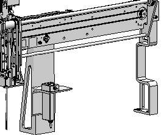
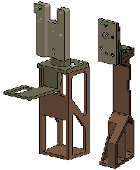
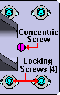

This procedure describes how to adjust the position of the sample pipettor probe relative to the wash tower, the sample storage module, and the sample presentation unit (SPU) before performing alignments on the sample pipettor.
Required Materials:
Sample pipettor to SPU adjustment tool
The sample pipettor interacts with the sample presentation unit (SPU), sample storage module, and the wash tower.
The adjustments for this module include:
adjust sample pipettor to wash tower position
adjust sample pipettor to sample storage module position
adjust sample pipettor to SPU position
Two types of sample pipettor towers are installed on instruments in the field. Universal towers are installed on all DxI 800 instruments with serial numbers 601433 and above and DxI 600 instruments with serial numbers 900097 and above. Original towers are installed on instruments with all other serial numbers. The adjustment procedure is different for each type of tower.
Figure 364: Original sample pipettor towers

Figure 365: Universal towers

Prepare the instrument for the adjustment procedure.
Open the upper left front cover and insert a cover interlock switch bypass.
Loosen, but do not remove, the locking screws securing the sample pipettor towers to each of the top plates.
Caution: To prevent damage to the sample pipettor probe during adjustment or alignment, verify that the sample pipettor probe is not in the path of the SPU tray.
Note: If a message is displayed that asks if you want to enable the motor of the selected primary device, select
No.
Depending on the sample pipettor tower that is installed, adjust the sample pipettor to SPU and sample storage positions using one of the next two procedures.
If original towers are installed, adjust the sample pipettor to SPU and sample storage positions
Select
Sample Pipettor as the device.
Select
Motors > Disable Both Motors.
Select
SPU Presentation Tray as the device,
Onload Position as the position, and select
Move X/Y to Position.
Place the sample pipettor adjustment tool in position 4 of a sample rack. Place the rack in the pipetting position (left side) of the SPU tray, and select
Home Device.
Move the sample pipettor to the center of the tool in the sample rack. Move the towers to center the sample pipettor probe over the crosshair in the alignment tool.
Move the sample pipettor to the center of the front slot opening in the cover of the sample storage module. Move the towers to center the probe over the slot in the cover.
When the adjustments are correct, tighten the six screws securing the sample pipettor towers to the base plate.
Recheck the adjustments by moving the pipettor between the two adjustment locations.
If the adjustments are correct, select
Move X/Y to Position, and remove the sample rack from the SPU tray.
If the adjustments are incorrect, repeat the adjustment procedure.
If universal towers are installed, adjust the sample pipettor to SPU and sample storage positions
Select
Sample Pipettor as the device.
Select
Motors > Disable Both Motors.
Select
SPU Presentation Tray as the device,
Onload Position as the position, and select
Move X/Y to Position.
Place the sample pipettor adjustment tool in position 4 of a sample rack. Place the rack in the pipetting position (left side) of the SPU tray, and select
Home Device.
Move the sample pipettor to the center of the tool in the sample rack. Use a slotted screwdriver to rotate the concentric screw on the top plate of the towers to center the sample pipettor probe over the crosshair in the alignment tool.

Move the sample pipettor to the center of the front slot opening in the cover of the sample storage module. Use a slotted screwdriver to rotate the concentric screw on the top plate of the towers to center the sample pipettor probe over the slot in the cover.
When the adjustments are correct, tighten the four locking screws securing the sample pipettor towers to the top plates.
Recheck the adjustments by moving the pipettor between the two adjustment locations.
If the adjustments are correct, select
Move X/Y to Position, and remove the sample rack from the SPU tray.
If the adjustments are incorrect, repeat the adjustment procedure.
For both types of sample pipettor tower, adjust the sample pipettor to wash tower position.
Loosen, but do not remove, the two screws securing the sample pipettor wash tower to the mounting plate.
Move the sample pipettor probe to the wash tower.
Adjust the wash tower x-axis to center the wash tower under the sample pipettor probe.
Securely tighten the wash tower mounting screws.
Recheck the adjustment.
If the adjustments are incorrect, repeat the adjustment procedure.
If the adjustments are correct, select
Motors
> Enable All.